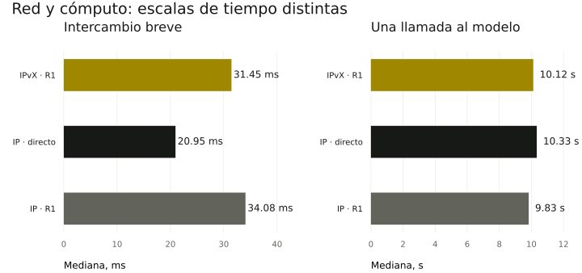

Experimentos y resultados
Mostramos qué ejecutamos exactamente, qué medimos y qué conclusiones permiten estos datos.
Experimento completado: modelos en sistemas invitados sin TCP/IP
A, B y R funcionaron en tres sistemas invitados sobre distintos equipos físicos. Dos modelos locales completaron cuatro tareas colaborativas mediante IPvX y un control IP. La administración externa mantuvo IP.
Investigar tareas y nodos · Manifiesto de registro · Comprobación previa de preparación
Anteriormente: intercambio de tramas en un host CI
En un experimento anterior separado, tres sistemas invitados sin INET/IPv6 realizaron tareas SHA-256 en un host CI. Se conservaron 90 tramas de la ejecución correcta y 10 de la ejecución con el intermediario detenido. Este experimento no utilizó un LLM.
Dos modelos locales
Qwen3-0.6B Q8_0 en máquinas distintas. A redacta un borrador, B lo comprueba con hechos adicionales y A formula la conclusión final. Tres variantes de entrega, preguntas y parámetros de modelo idénticos.
Dos modelos locales completaron las 12 tareas colaborativas mediante tres variantes de entrega. La entrega funcionó, pero el modelo cometió un error factual. Este experimento no muestra una ventaja de velocidad de IPvX sobre IP.
La tabla se desplaza horizontalmente: a la derecha están la evaluación de la respuesta y el tiempo del modelo.
| Entrega | Eco p50 / p95 | Tareas | Coincidencia con la rúbrica | LLM, mediana por llamada |
|---|---|---|---|---|
| IPvX · mediante R1 | 31.45 / 50.943 ms | 4 / 4 | 2 / 4 | 10.1 s |
| IP · directo | 20.949 / 37.995 ms | 4 / 4 | 2 / 4 | 10.3 s |
| IP · mediante R1 | 34.077 / 85.07 ms | 4 / 4 | 2 / 4 | 9.8 s |
Cuatro preguntas distintas por variante; una sola infraestructura, sin WAN ni operadores independientes. El IP directo tiene menos saltos. La columna de rúbrica exige coincidencia exacta de la etiqueta: en la pregunta sobre velocidad se esperaba de antemano insufficient y el modelo respondió no; ambas respuestas rechazan una ventaja no demostrada. Esa diferencia de etiquetas no equivale a un error factual. El modelo rechaza erróneamente el hecho 384/384, contradice su propia etiqueta al explicar las repeticiones e inventa una comparación de latencias en la pregunta sobre velocidad.
Descargar los datos de la comparación
IPvX · mediante R1 · delivery · ejecución guardada
A · borrador · 7.1 s
{"decision": "no", "evidence": ["A1"], "explanation": "The evidence provided does not confirm that all 384 document jobs returned correct results. Only one run completed 384/384 tasks correctly."}
B · revisión · 9.3 s
{"decision": "no", "evidence": ["A1", "B1"], "explanation": "The evidence provided does not confirm that all 384 document jobs returned correct results. Only one run completed 384/384 tasks correctly."}
A · resultado final · 9.3 s
{"decision": "no", "evidence": ["A1", "B1"], "explanation": "The evidence provided does not confirm that all 384 document jobs returned correct results. Only one run completed 384/384 tasks correctly."}
A → R1 → B → R1 → A
IPvX · mediante R1 · speed · ejecución guardada
A · borrador · 10.2 s
{"decision": "no", "evidence": ["A4: Accepted document-task latency p50 was 459 ms, p95 was 1321 ms."], "explanation": "The provided evidence does not support the claim that native IPvX is faster than ordinary IP for language-model agents. The data shows a higher latency for IPvX, not a faster one."}
B · revisión · 14.5 s
{"decision": "no", "evidence": ["A4", "B4"], "explanation": "The provided evidence does not support the claim that native IPvX is faster than ordinary IP for language-model agents. The data shows a higher latency for IPvX, not a faster one. Evidence B4 also indicates the experiment did not include language models or an ordinary-IP baseline, making it impossible to establish a comparative speed result."}
A · resultado final · 14.3 s
{"decision": "no", "evidence": ["A4", "B4"], "explanation": "The provided evidence does not support the claim that native IPvX is faster than ordinary IP for language-model agents. The data shows a higher latency for IPvX, not a faster one. Evidence B4 also indicates the experiment did not include language models or an ordinary-IP baseline, making it impossible to establish a comparative speed result."}
A → R1 → B → R1 → A
IP · directo · delivery · ejecución guardada
A · borrador · 7.2 s
{"decision": "no", "evidence": ["A1"], "explanation": "The evidence provided does not confirm that all 384 document jobs returned correct results. Only one run completed 384/384 tasks correctly."}
B · revisión · 9.4 s
{"decision": "no", "evidence": ["A1", "B1"], "explanation": "The evidence provided does not confirm that all 384 document jobs returned correct results. Only one run completed 384/384 tasks correctly."}
A · resultado final · 9.5 s
{"decision": "no", "evidence": ["A1", "B1"], "explanation": "The evidence provided does not confirm that all 384 document jobs returned correct results. Only one run completed 384/384 tasks correctly."}
A → B → A
IP · directo · speed · ejecución guardada
A · borrador · 10.4 s
{"decision": "no", "evidence": ["A4: Accepted document-task latency p50 was 459 ms, p95 was 1321 ms."], "explanation": "The provided evidence does not support the claim that native IPvX is faster than ordinary IP for language-model agents. The data shows a higher latency for IPvX, not a faster one."}
B · revisión · 13.6 s
{"decision": "no", "evidence": ["A4", "B4"], "explanation": "The provided evidence does not support the claim that native IPvX is faster than ordinary IP for language-model agents. The data shows a higher latency for IPvX, not a faster one. Evidence B4 also indicates the experiment did not include language models or an ordinary-IP baseline, making it impossible to establish a comparative speed result."}
A · resultado final · 14.1 s
{"decision": "no", "evidence": ["A4", "B4"], "explanation": "The provided evidence does not support the claim that native IPvX is faster than ordinary IP for language-model agents. The data shows a higher latency for IPvX, not a faster one. Evidence B4 also indicates the experiment did not include language models or an ordinary-IP baseline, making it impossible to establish a comparative speed result."}
A → B → A
IP · mediante R1 · delivery · ejecución guardada
A · borrador · 7.1 s
{"decision": "no", "evidence": ["A1"], "explanation": "The evidence provided does not confirm that all 384 document jobs returned correct results. Only one run completed 384/384 tasks correctly."}
B · revisión · 9.3 s
{"decision": "no", "evidence": ["A1", "B1"], "explanation": "The evidence provided does not confirm that all 384 document jobs returned correct results. Only one run completed 384/384 tasks correctly."}
A · resultado final · 9.5 s
{"decision": "no", "evidence": ["A1", "B1"], "explanation": "The evidence provided does not confirm that all 384 document jobs returned correct results. Only one run completed 384/384 tasks correctly."}
A → R1 → B → R1 → A
IP · mediante R1 · speed · ejecución guardada
A · borrador · 9.8 s
{"decision": "no", "evidence": ["A4: Accepted document-task latency p50 was 459 ms, p95 was 1321 ms."], "explanation": "The provided evidence does not support the claim that native IPvX is faster than ordinary IP for language-model agents. The data shows a higher latency for IPvX, not a faster one."}
B · revisión · 13.5 s
{"decision": "no", "evidence": ["A4", "B4"], "explanation": "The provided evidence does not support the claim that native IPvX is faster than ordinary IP for language-model agents. The data shows a higher latency for IPvX, not a faster one. Evidence B4 also indicates the experiment did not include language models or an ordinary-IP baseline, making it impossible to establish a comparative speed result."}
A · resultado final · 14.0 s
{"decision": "no", "evidence": ["A4", "B4"], "explanation": "The provided evidence does not support the claim that native IPvX is faster than ordinary IP for language-model agents. The data shows a higher latency for IPvX, not a faster one. Evidence B4 also indicates the experiment did not include language models or an ordinary-IP baseline, making it impossible to establish a comparative speed result."}
A → R1 → B → R1 → A
Qué mostró la comprobación de hipótesis
LLM1 · Dos modelos en máquinas distintas completan un ciclo colaborativo · Verificado
36 llamadas nuevas medidas y 12 calentamientos excluidos, dos VM.
LLM2 · Intercambio nativo sin IP/DNS en el worker y con ID estable · Verificado dentro del alcance del experimento
48 entregas IPvX, 0 reintentos; firmas de recibos y saltos verificadas. La administración de las máquinas sigue usando IP.
LLM3 · IP convencional proporciona una referencia reproducible · Verificado dentro del alcance del experimento
IP directo e IP mediante R1, 4 preguntas y 40 solicitudes de eco por variante; únicamente descripción de una muestra pequeña.
LLM4 · IPvX es más rápido que IP convencional · No demostrado
Mediana del eco IPvX 31.450 ms, IP directo 20.949 ms, IP mediante R1 34.077 ms; no se ha demostrado una ventaja estadística.
LLM5 · Cambiar la entrega modifica el significado de la respuesta · No observado
Con los mismos parámetros, las 36 respuestas medidas coincidieron byte a byte entre variantes en la etapa/pregunta correspondiente.
LLM6 · El modelo evalúa con fiabilidad los hechos de investigación · No superado
2/4 etiquetas exactas; hay una conclusión falsa, una explicación que contradice su etiqueta y una comparación de latencias inventada.
LLM7 · La colaboración supera a un modelo individual · No comprobado
No existe una variante de control individual independiente.
LLM8 · Los investigadores externos y sus modelos han sido admitidos por mayoría · No comprobado
Aún no hay participantes externos independientes; el portal prepara propuestas y cuenta votos, pero no concede acceso automáticamente.
Cinco máquinas y fallo del intermediario
Las tareas y el control de rutas utilizan tramas 0x88B5. El intercambio directo A–B está prohibido en el laboratorio. La ruta cambia tras cerrar el socket de R1; esto no apaga la VM.
Se verificaron los saltos firmados, la conservación del ID, la prohibición de la ruta directa y la recuperación automática de R1. Un solo operador, un centro de datos, un conjunto fijo de participantes. La administración de las máquinas sigue usando IP.
Documentos a través de la red nativa
Indexación de textos IPvX, búsqueda exacta y SHA-256. 128 tareas de cada tipo. 80 reintentos, 23 solicitudes repetidas intencionadamente, 384 ejecuciones únicas.
El socket de un nodo se cerró durante 10 044 ms. Tras detectar el fallo, se completaron 93 entregas correctas durante la interrupción; se reconstruyeron siete rutas afectadas. Son procesos de software con claves propias, no modelos de lenguaje.
Simulación de redes grandes
16, 64 y 256 enrutadores; hasta 2 048 agentes lógicos.
Es un modelo discreto de colas, pérdidas y fallos. El modelo supone anuncios compactos y un presupuesto de saltos ampliado, aún no implementados en el protocolo actual.
36 ejecuciones con 12 000 tareas ofrecidas cada una. Para 256 enrutadores: aproximadamente 99,8% de entrega en el escenario normal y 79% con sobrecarga bajo las condiciones fijadas. Los parámetros no están calibrados para Internet y no constituyen una comparación con IP.
El siguiente paso es implementar el control de congestión y medir el estado de las rutas antes de ampliar la red. Parámetros del modelo →